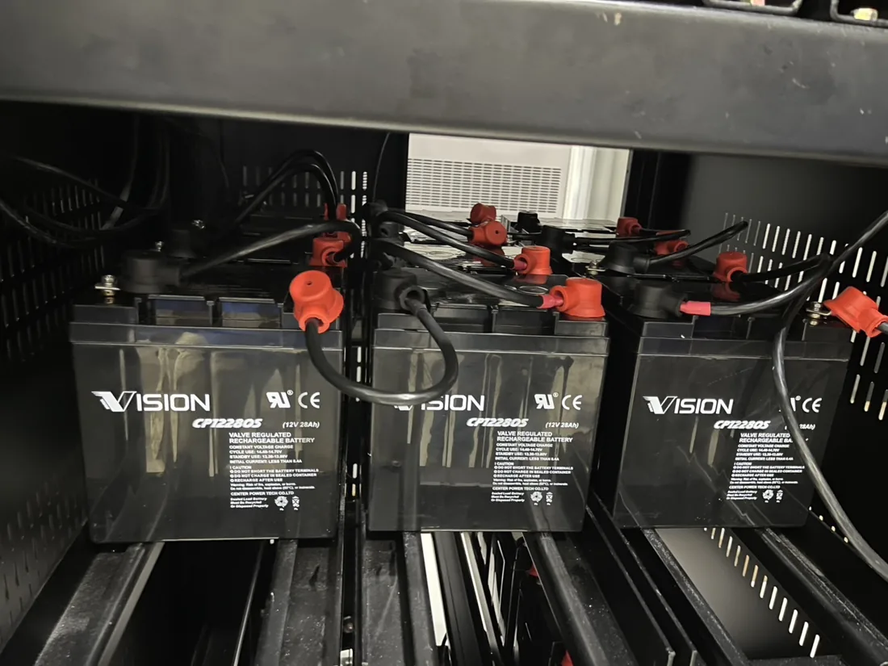
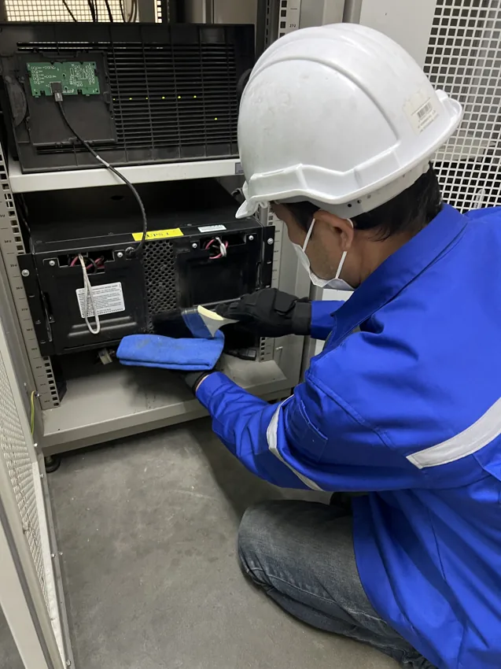
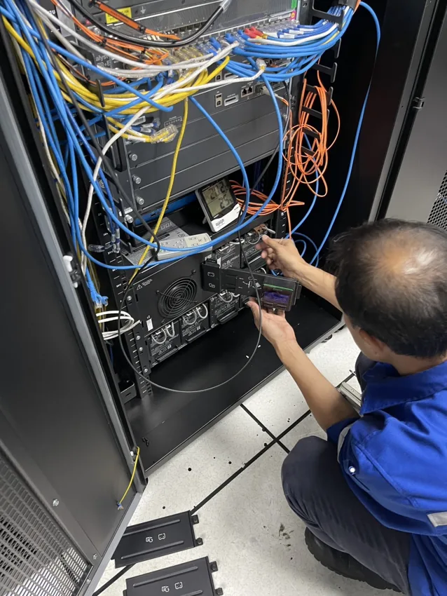

BATTERY / 01
เปลี่ยนแบตเตอรี่ UPS
ตรวจรุ่นและข้อมูลแบตเตอรี่ ประเมินตัวเลือกที่เข้ากันได้ และแจ้งรายละเอียดก่อนนัดหน้างาน
รายละเอียดเปลี่ยนแบตเตอรี่ →D ON NET / UPS BATTERY SERVICE
บริการเปลี่ยนแบตเตอรี่ UPS และตรวจเช็กเครื่องถึงหน้างาน
รับงานทั่วประเทศ · ยืนยันรุ่นและนัดหมายกับทีมงาน
ส่ง รูปฉลากรุ่น UPS · จำนวนเครื่อง · สถานที่
เพื่อให้ทีมงานประเมินและเสนอราคาก่อนนัดบริการ
LINE ID: donnet2026

ให้เห็นยี่ห้อและรหัสรุ่นชัดเจน
พร้อมอาการหรือข้อความแจ้งเตือน
รับงานทั่วประเทศ · ยืนยันนัดกับทีมงาน
01 / SERVICES THAT FIT YOUR UPS
UPS แต่ละรุ่นใช้แบตเตอรี่และวิธีตรวจสอบต่างกัน
ทีมงานจะยืนยันขอบเขตงานก่อนเสนอราคา
BATTERY / 01
ตรวจรุ่นและข้อมูลแบตเตอรี่ ประเมินตัวเลือกที่เข้ากันได้ และแจ้งรายละเอียดก่อนนัดหน้างาน
รายละเอียดเปลี่ยนแบตเตอรี่ →INSPECTION / 02
สอบถามรายการตรวจที่เหมาะกับรุ่นเครื่อง จำนวนเครื่อง และข้อกำหนดการเข้าพื้นที่ พร้อมผลสรุปตามงานที่ตกลง
รายละเอียดตรวจเช็กเครื่อง →AFTERCARE / 03
เก็บใบงานและ Serial Number ไว้อ้างอิง ตรวจสอบข้อมูลประกันและสอบถามทีมงานตามเงื่อนไขในใบงาน
ตรวจสอบข้อมูลประกัน →SERVICE ACROSS THAILAND
ส่งรายละเอียดไว้ทาง LINE หรือแบบฟอร์ม ทีมงานติดต่อกลับในเวลาทำการเพื่อประเมินและเสนอราคา
ส่งรูปฉลากรุ่นทาง LINE ↗ให้เห็นยี่ห้อและรหัสรุ่น พร้อมแจ้งอาการหรือข้อความเตือนที่พบ
แจ้งเขต / อำเภอ จังหวัด และวันเวลาที่สะดวก เพื่อประสานงานก่อนนัด
ทีมงานติดต่อกลับในเวลาทำการเพื่อสอบถามรายละเอียด ประเมินงาน และเสนอราคา
02 / FROM OUR WORK FILES
ตัวอย่างงานเปลี่ยนแบตเตอรี่และตรวจเช็ก UPS
สอบถามรายละเอียดงานที่เหมาะกับเครื่องของคุณได้


03 / HOW WE WORK
รูปฉลากรุ่น จำนวนเครื่อง อาการ และสถานที่
ยืนยันรุ่น พื้นที่ ขอบเขตงาน และค่าใช้จ่าย
ตกลงวันเวลาและเงื่อนไขเข้าพื้นที่กับทีมงาน
ดำเนินงานตามที่ตกลง พร้อมผลสรุปและเงื่อนไขหลังบริการ
THE COMPANY BEHIND DONGROUPS.COM
D ON NET.,CO.LTD
DonGroups คือชื่อโดเมนเว็บไซต์ของบริษัท
บริการบนเว็บไซต์นี้ดำเนินการโดย บริษัท ดี ออน เน็ต จำกัด ติดต่อทีมงานเพื่อขอใบเสนอราคาและยืนยันรายละเอียดงาน
โทร 065 262 9886
LINE ID: donnet2026
admin@dongroups.com